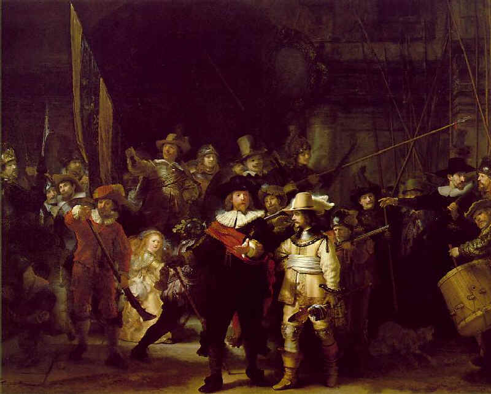

Night watch Rembrandt Rijksmuseum Amsterdam
市民警備隊が出動する瞬間の緊張した状態が表現されている傑作 照明の発達していない時代に左上４５度から光線を隊長と副隊長にあて隊員との光の強弱をうまくつかっておりレンブラントライトとして画家だけでなく写真家や舞台照明家がこの基本手法を用いている またレディーには別の光源を用い絵の魅力を際立たせている
Rijksmuseum